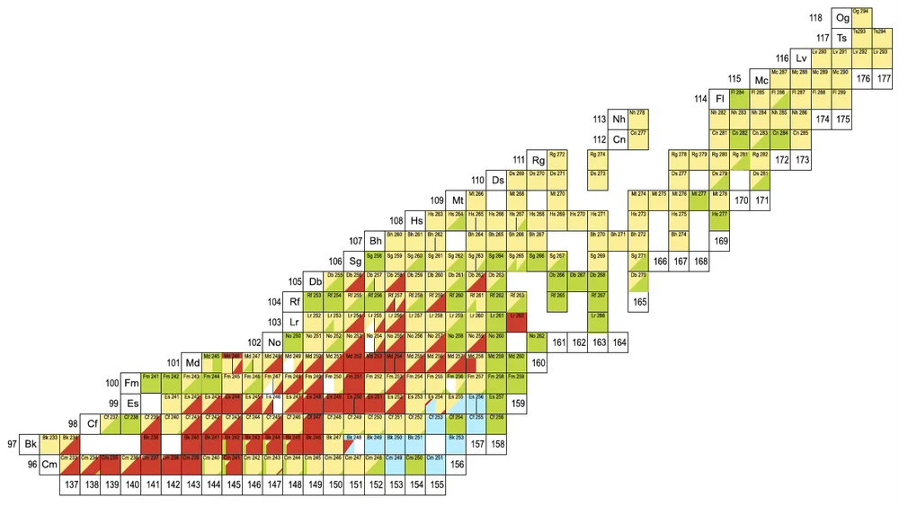

Nuclear Reaction Dynamics: Fusion–Evaporation and Superheavy Elements
Fusion–evaporation reactions and the synthesis of superheavy elements are parts of one subject, nuclear reaction dynamics, described by the same three-step factorisation of the evaporation residue cross section. Production cross sections for superheavy nuclei, including Z = 119 and Z = 120, are predicted with KEWPIE3, which refines the KEWPIE2 cascade code for the survival step [2] by implementing and calibrating the formation step. The work connects to experimental studies of synthesis and decay at S3.
Why superheavy nuclei exist


Within the Liquid Drop Model, nuclei beyond Z ≈ 104 have no fission barrier and should disintegrate at once. Yet they exist.
Quantum shell corrections add the extra binding energy that stabilises them. The next closed shells are predicted at Z = 114 or 126 and N = 184, the so-called island of stability.
Superheavy elements are not found in nature. They are made artificially, one atom at a time, with heavy-ion accelerators.
The evaporation residue cross section: three steps
The evaporation-residue cross section of any fusion–evaporation reaction is the product of one factor for each step. Superheavy elements are its most demanding application.
- 1. Capture The projectile and target overcome the Coulomb barrier and the nuclei touch.
- 2. Formation The touching configuration evolves into a compound nucleus, in competition with quasi-fission.
- 3. De-excitation (survival) The compound nucleus cools by emitting neutrons and becomes an evaporation residue, in competition with fission.
Capture is summed over partial waves ℓ; formation (red) and survival (blue) are the probabilities that follow.
Capture can be calculated reliably with optical models and barrier distributions.
Survival is treated with statistical models; the key challenge is predicting fission barriers accurately.
Formation is the most ambiguous step: published models differ by two to three orders of magnitude. It is the central focus of my work.
The challenges
![Plot of the compound-nucleus formation probability P_CN, on a logarithmic axis from 10 to the power minus 10 up to 10, against the compound-nucleus proton number Z_CN from 102 to 114, for cold fusion. Six model curves are shown (Adamian et al. 2000, Feng et al., Veselsky, Swiatecki et al., Loveland, and Siwek-Wilczynska et al.). All fall steeply with Z_CN, from about 0.1 near Z = 102 to between about 10 to the power minus 9 and 10 to the power minus 5 near Z = 113, and the curves spread over two to three orders of magnitude.](assets/figures/pcn-versus-z-cold-fusion-full.webp)
- Formation is ambiguous. Models of the compound-nucleus formation probability disagree by orders of magnitude, and the process is hindered by quasi-fission.
- Cross sections are tiny. For the heaviest elements they are of the order of picobarns, and predictions for elements 119 and 120 are at the femtobarn level.
- Fission barriers are uncertain. The survival probability depends strongly on them.
- One atom at a time. Each event is rare, so every experiment is long and every prediction matters.
The formation probability from the full Langevin equation
The formation probability is computed from the full one-dimensional Langevin equation for the surface separation s of the two nuclei after capture, started at the injection point s₀. The system keeps its inertia and carries the kinetic energy that remains after capture over an inverted-parabola barrier of curvature ω, under friction β and a random force r(t) at temperature T. The thesis calls this the undamped formalism, in contrast to the overdamped limit:
The Langevin equation, with a random force that satisfies the fluctuation-dissipation relation.
Shifting the fusion saddle to the origin gives the equation for q, which is solved with a Laplace transform.
The mean trajectory ⟨q(t)⟩ and the variance σ_q²(t) follow from the solution. This is the probability that the system has diffused over the fusion saddle into a compound nucleus.
The asymptotic limit. B(s₀) is the inner barrier at the injection point, and K_rem(E_cm, ℓ) is the remaining kinetic energy of partial wave ℓ after capture.
The damping ratio x, the angular frequency ω of the parabolic barrier, and the dynamical temperature T′.
What controls formation. The probability depends on three quantities: the inner barrier B(s₀), the temperature T and the remaining kinetic energy K_rem.
Three regimes. Below the effective barrier B_eff = (x + √(1+x²))² B(s₀), the mean trajectory turns back and the system re-separates by quasi-fission. Very few systems fuse, and only through the random force. At K_rem = B_eff the probability is ½. Above B_eff the mean trajectory crosses the saddle and the probability approaches one.
Fitting parameters. The injection-point distance s₀ and the reduced friction β_ss are the two fitting parameters. They take the same values for all reactions analysed, the hot-fusion reactions induced by 48Ca, whose targets have similar deformations. Cold fusion requires an additional parameter that depends on the Coulomb parameter.
Overdamped limit. For large x, T′ tends to T and the second term vanishes, which recovers the overdamped expression P_CN = ½ erfc √(B/T) of the fusion-by-diffusion model. The analysis here retains the full dynamics.
One collective variable. The surface separation is the slow collective variable. Eliminating the fast variables, such as the neck, shifts its initial condition, and the shift is absorbed in a single parameter, the injection-point distance.
KEWPIE3 applies this to superheavy-element predictions.
Fusion–evaporation reactions: successes so far
Fusion–evaporation reactions have produced elements up to Z = 118 [1]. The measured cross sections follow two patterns.
- Cold fusion (208Pb and 209Bi targets, one-neutron channel): cross sections fall steeply with proton number, from about 105 pb near Z = 102 to about 10−2 pb near Z = 113 [1].
- Hot fusion (48Ca beams on targets from 238U to 249Cf, three- and four-neutron channels): cross sections of the order of 1 to 10 pb for the elements from Z = 112 to Z = 118 [1].
![Two plots of measured fusion–evaporation cross sections in picobarns, on a logarithmic axis from 10 to the power minus 3 up to 10 to the power 7, against the proton number of the compound nucleus from 100 to 120. Panel a, cold fusion (one-neutron channel) with 208Pb and 209Bi targets and beams from 48Ca to 70Zn: points fall along a straight line from about 2.5 times 10 to the power 5 pb at Z = 102 to about 0.02 pb at Z = 113. Panel b, hot fusion (three- and four-neutron channels) with a 48Ca beam: points for 208Pb, 209Bi and 226Ra targets fall steeply to about 15 pb at Z = 108, and points for 238U to 249Cf targets (superheavy nuclei, Z = 112 to 118) lie on a plateau of roughly 0.6 to 10 pb.](assets/figures/fusion-evaporation-cross-sections.webp)
Cold fusion cross sections fall steeply with proton number, while hot fusion with 48Ca beams keeps them at the picobarn level up to Z = 118, which is why those elements could be reached [1].
Elements heavier than Z = 118 need new projectile–target combinations. Attempts to synthesise elements with Z = 119, 120 and 122 with projectiles heavier than 48Ca (64Ni + 238U, 58Fe + 244Pu, 50Ti + 249Bk, 50Ti + 249Cf and 70Zn + 238U) have so far produced no events. This underlines the need to choose the projectile with care, even where the target is readily available, since targets heavier than californium are highly radioactive and not suitable.
A recent experiment with 50Ti on 244Pu, aimed at Z = 116 with a beam other than 48Ca, gave a cross section of 0.44 pb, based on two observed events. Beyond Z ≈ 114 the cross section starts to decrease, a limiting factor that can only be overcome by investigating alternative projectile–target combinations.
Why the model must be refined for new elements
Attempts to synthesise elements 119 and 120 have so far failed. The projectile–target combinations of current experimental interest have predicted cross sections at the femtobarn level.
Predictions of the formation probability differ widely between models, and a simple phenomenological model carries uncertainties that cannot be removed by refitting alone. Refining the formation step, and quantifying its uncertainty, is therefore needed for reliable predictions for new elements.
See the predicted cross sections for four unmeasured reactions towards Z = 119 and Z = 120.
References
[1] S. Hofmann et al., Pure Appl. Chem. 92(9), 1387–1446 (2020).
[2] H. Lü, A. Marchix, Y. Abe and D. Boilley, “Kewpie2: A cascade code for the study of dynamical decay of excited nuclei”, Comput. Phys. Commun. 200, 381–399 (2016).
[3] R. Naik, W. Loveland, P. Sprunger, A. Vinodkumar, D. Peterson, C. Jiang, S. Zhu, X. Tang, E. Moore and P. Chowdhury, “Measurement of the fusion probability P_CN for the reaction of 50Ti with 208Pb”, Phys. Rev. C 76(5), 054604 (2007).
[4] D. Ackermann, “Decay spectroscopy of heavy and superheavy nuclei”, Prog. Part. Nucl. Phys. 147, 104215 (2026), doi:10.1016/j.ppnp.2025.104215.